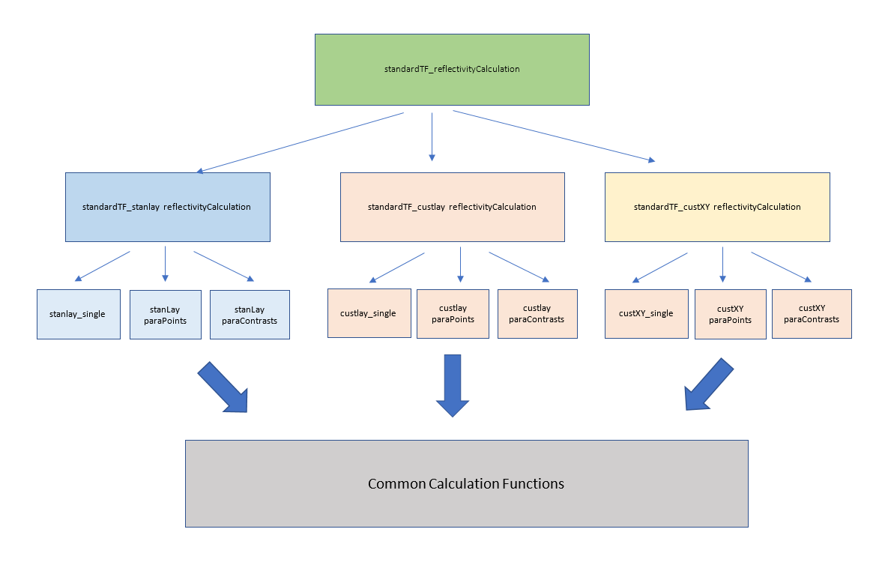

Target Functions
Reflectivity Calculation
reflectivity_calculation
- targetFunctions.reflectivity_calculation.reflectivity_calculation(problemDef, problemDef_cells, problemDef_limits, controls)
Main entry point into the reflectivity calculation for the toolbox. This is the main function that is called by any of the minimisers or analysis tools from the rest of the toolbox.
The main job of this function is to decide which type of calculation (i.e. ‘Target function’ is required, and call the relevant routines. The types of available target functions are:
standardTF - The main basic target function type, for non polarised neutrons (or x-rays) with non-absorbing samples. Different model types are specified in sub functions from here.
standardTFAbs - Identical to standardTF, but includes imaginary refractive index terms.
oilWaterTF - Target function for oil-water samples
domainsTF - Target function for samples consisting of domains which are larger than the beam lateral coherence length.
polarisedTF - Target function for cases for polarised neutrons with polarisation analysis.
Common Functions
Allocate Layers For Contrast
- targetFunctions.common.groupLayers.allocateLayersForContrast(contrastLayers, outParameterisedLayers)
Decide which layers are needed for a particular contrast. This function takes the master array of all layers and extracts which parameters are required for a particular contrast.
- INPUTS:
outParameterisedLayers - List of all the available layers thisContrastLayers - Array detailing which layers are required for this contrast
Allocate Params To Layers
- targetFunctions.common.groupLayers.allocateParamsToLayers(params, layersDetails)
Allocates parameters from the parameter array to the correct layers
This function takes the list of all layers in ‘layersDetails’, then loops over all the layers, putting in the correct parameter value from the parameters array into each layer in the ‘outLayers’ cell array
Back Sort
- targetFunctions.common.backSorts.backSort(cBacks, cShifts, cScales, cNbas, cNbss, cRes, backs, shifts, sf, nba, nbs, res)
Distributes the background and shift values among the different contrasts
USAGE:
[backg,qshift,sf,nba,nbs,resol] = backsort(cBacks,cShifts,cScales,cNbas,cNbss,cRes,backs,shifts,sf,nba,nbs,res)
- INPUTS:
cBacks : Which backround value is associated with each contrast
cShifts : Which qz_shift value is associated with each contrast
cScales : Which scalefactor value is associated with each contrast
cNbas : Which NBa value is associated with each contrast
cNbss : Which Nbs value is associated with each contrast
cRes : Which resolution value is associated with each contrast
backs : List of all background values.
shifts : List of all qz-shift values
sf : List of all scalefactor values
nba : List of all nba values
nbs : List of all nbs values
res : List of all resolution values
- OUTPUTS:
backgs : list of actual background values for each contrast
qshifts : list of actual shift values for each contrast
sfs : list of actual shift values for each contrast
nbas : list of actual shift values for each contrast
nbss : list of actual shift values for each contrast
nbss : list of actual shift values for each contrast
Chi-Squared
- targetFunctions.common.costFunctions.chiSquared.chiSquared(thisData, thisFit, P)
Chi-squared function is used to evaluate the goodness of fit. It is a measure of the difference between the observed and expected.
Group Layers Mod
- targetFunctions.common.groupLayers.groupLayers_Mod(allLayers, allRoughs, geometry, nbair, nbsubs)
Arrange layers according to geometry and apply any coverage correction.
USAGE:
[outLayers, outSsubs] = groupLayers_Mod(allLayers,allRoughs,numberOfContrasts,geometry,nbairs,nbsubs)
INPUTS:
allLayers = cell array, one for each contrast. Each cell is the list of layer values for each contrast.
allRoughs = Double of substrate roughness for each contrast.
numberOfContrasts = double.
geometry = ‘Air / Liquid (or solid)’ or ‘Solid / Liquid’
nbairs = vector of nbair values.
nbsubs = vector of nbsub values.
The paratt calculation procedds through the z,rho,rough stack, and the parameter ‘ssub’ in callParatt is the final roughness encountered.
For air liquid ‘ssub’ is therefore the substrate roughness.
For solid liquid, the substrate roughness is the first roughness encountered, and ‘ssub’ is then the roughness of the outermost layer
Outputs:
outLayers = cell array of layers param values for each contrast.
outSsubs = vector of substrate roughness values.
Loop Cpp Custlay Wrapper (Single,Points,Contrasts)
- targetFunctions.common.loopCppCustlayWrapper.loopCppCustlayWrapper_CustLaycontrast(cBacks, cShifts, cScales, cNbas, cNbss, cRes, backs, shifts, sf, nba, nbs, res, cCustFiles, numberOfContrasts, customFiles, params)
This is the function that deals with the C++ Custom User Scripts. This calls a mex called testDLL_mex which is a wrapper for the C++ class Library in libManager.h. Library Class uses dylib.hpp to load the dynamic library at runtime. The dynamic library would be the user’s custom c++ script compiled into a DLL/dylib/.so file.
INPUTS:
cBacks : Which background value is associated with each contrast
cShifts : Which qz_shift value is associated with each contrast
cScales : Which scalefactor value is associated with each contrast
cNbas : Which NBa value is associated with each contrast
cNbss : Which Nbs value is associated with each contrast
cRes : Which resolution value is associated with each contrast
backs : List of all background values.
shifts : List of all qz-shift values
sf : List of all scalefactor values
nba : List of all nba values
nbs : List of all nbs values
res : List of all resolution values
cCustFiles :
numberOfContrasts : Number of contrasts
customFiles : Cell of all custom user script files
params : Structure of all parameters
OUTPUTS:
allLayers : Cell of all layers
allRoughs : Cell of all roughnesses
Loop Matlab Custom Wrapper (Single,Points,Contrasts)
- targetFunctions.common.loopMatlabCustomLayers.mexCompile.loopMatalbCustlayWrapper_CustLaycontrast(cBacks, cShifts, cScales, cNbas, cNbss, cRes, backs, shifts, sf, nba, nbs, res, cCustFiles, numberOfContrasts, customFiles, params)
This function takes care of MATLAB Custom Layers from the User. This function in essence calls an feval to compute matlab function.
INPUTS:
cBacks : Which background value is associated with each contrast
cShifts : Which qz_shift value is associated with each contrast
cScales : Which scalefactor value is associated with each contrast
cNbas : Which NBa value is associated with each contrast
cNbss : Which Nbs value is associated with each contrast
cRes : Which resolution value is associated with each contrast
backs : List of all background values.
shifts : List of all qz-shift values
sf : List of all scalefactor values
nba : List of all nba values
nbs : List of all nbs values
res : List of all resolution values
cCustFiles :
numberOfContrasts : Number of contrasts
customFiles : Cell of all custom user script files
params : Structure of all parameters
OUTPUTS:
allLayers : Cell of all layers
allRoughs : Cell of all roughnesses
Warning
MEX version of relfectivity calulation uses a Matlab runtime to make feval work but if you compile to C++ source code, Coder won’t compile as there is no MATLAB runtime. This is a known issue. Hence, MATLAB Engine class that can open a MATLAB session externally is recommended and this is yet to done.
Warning
BUG: The function name must be fixed from loopMatalb to loopMatlab but it works as it now.
Shift Data
- targetFunctions.common.shiftData.shiftdata(scalefac, horshift, dataPresent, data, dataLimits, simLimits)
Shifts the data according to scale factor. If there is no data, makes x-data over the simulation range.
INPUTS:
scalefac = problem.scalefactors;
horshift = problem.qshifts;
numberOfContrasts = problem.numberOfContrasts;
dataPresent = problem.dataPresent;
allData = problem.data;
dataLimits = problem.dataLimits;
Standard Target Functions (StandardTF)
Standard Layers (StanLay)
standardTF Standard Layers - Single
- targetFunctions.standard_TF.standardTF_stanLay.standardTF_stanlay_single(problemDef, problemDef_cells, problemDef_limits, controls)
Single theraded version of the Standard Layers calculation This is the main reflectivity calculation of the standard layers calculation type. It extracts the required paramters for the contrasts from the input arrays, then passes the main calculation to ‘standardLayersCore’, which carries out the calculation iteslf. The core calculation is common for both standard and custom layers.
standardTF Standard Layers - ParaPoints
- targetFunctions.standard_TF.standardTF_stanLay.standardTF_stanlay_paraPoints(problemDef, problemDef_cells, problemDef_limits, controls)
Standard Layers calculation paralelised over the inner loop This is the main reflectivity calculation of the standard layers calculation type. It extracts the required paramters for the contrasts from the input arrays, then passes the main calculation to ‘standardLayersCore’, which carries out the calculation iteslf. The core calculation is common for both standard and custom layers.
standardTF Standard Layers - ParaContrasts
- targetFunctions.standard_TF.standardTF_stanLay.standardTF_stanlay_paraContrasts(problemDef, problemDef_cells, problemDef_limits, controls)
Standard Layers calculation paralelised over the outer loop This is the main reflectivity calculation of the standard layers calculation type. It extracts the required paramters for the contrasts from the input arrays, then passes the main calculation to ‘standardLayersCore’, which carries out the calculation iteslf. The core calculation is common for both standard and custom layers.
Custom Layers (CustLay)
standardTF_custlay_single
- targetFunctions.standard_TF.standardTF_custLay.standardTF_custlay_single(problemDef, problemDef_cells, problemDef_limits, controls)
Single threaded version of the custom layers, standardTF reflectivity calculation. The function extracts the relevant parameters from the input arrays, allocates these on a pre-contrast basis, then calls the ‘core’ calculation (the core layers standardTf calc is shared between multiple calculation types).
standardTF_custlay_parapoints
- targetFunctions.standard_TF.standardTF_custLay.standardTF_custlay_paraPoints(problemDef, problemDef_cells, problemDef_limits, controls)
Multi threaded version of the custom layers over reflectivity poimnts for standardTF reflectivity calculation. The function extracts the relevant parameters from the input arrays, allocates these on a pre-contrast basis, then calls the ‘core’ calculation (the core layers standardTf calc is shared between multiple calculation types).
standardTF_custlay_paraContrasts
- targetFunctions.standard_TF.standardTF_custLay.standardTF_custlay_paraContrasts(problemDef, problemDef_cells, problemDef_limits, controls)
Multi threaded version of the custom layers over reflectivity contrasts for standardTF reflectivity calculation. The function extracts the relevant parameters from the input arrays, allocates these on a pre-contrast basis, then calls the ‘core’ calculation (the core layers standardTf calc is shared between multiple calculation types). This differs from the other two paralellisations in that the custom model files are processed in a paralell loop (using the Matlab Paralell Computing Toolbox) outside the main loop, before the main loop is then processed in the compiled version using OpenMP.
Custom XY (CustXY)
standard_TF_custXY_single
- targetFunctions.standard_TF.standardTF_custXY.standardTF_custXY_single(problemDef, problemDef_cells, problemDef_limits, controls)
Extract individual cell arrays
standard_TF_custXY_parapoints
- targetFunctions.standard_TF.standardTF_custXY.standardTF_custXY_paraPoints(problemDef, problemDef_cells, problemDef_limits, controls)
Multi threaded version of the custom XY profile over reflectivity points for standardTF reflectivity calculation.
standard_TF_custXY_paraContrasts
- targetFunctions.standard_TF.standardTF_custXY.standardTF_custXY_paraContrasts(problemDef, problemDef_cells, problemDef_limits, controls)
Extract individual cell arrays